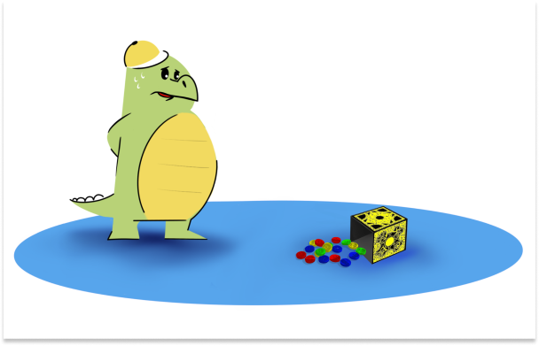

fun4kids.ru
В браузере →В таком блоке будет текст для взрослых. Читать его ребёнку не надо. Весь остальной текст письма для вашего малыша. Если в тексте есть вопросы, то пусть ребёнок ответит на них прежде, чем читать дальше. У вас как расказчика и у ребёнка должен получится диалог. Удачи!
Генри и книга о семье

Генри решил написать книгу о своей семье. Чтобы книга получилась интересной, Генри задает всем домашним много вопросов. Может ты тоже захочешь рассказать о своей семье? Попробуй, будет здорово!
Вы можете записать вопросы и ответы вашего ребёнка на обратной стороне рисунков и поделок ближайших дней. После собрать их в отдельную папку и превратить ее в семейную книгу вашего малыша.
Назови и сосчитай всех членов своей семьи
Ребенок называет, с кем живет и загибает пальчики.
Я живу с...
Скажи, как зовут членов членов твоей семьи?
Мою маму зовут…
Моего папу зовут…
У тебя есть тетя? Как ее зовут?
У тебя есть дядя? Как его зовут?
Ребенок называет по именам всех членов семьи: бабушек, дедушек, братьев, сестёр и т.д.
Как ласково можно назвать маму?
Как ласково можно назвать папу?
Как ласково можно назвать остальных членов
семьи: брата, сестру, бабушку,
дедушку?
А как ласково называют тебя, малыш?
Расскажи, что ты любишь делать с каждым
членом твоей семьи? Продолжи предложение: с
мамой я люблю…, с папой я люблю…. и т.д.
Стьюи и мамина шкатулка с пуговицами
Стьюи и Генри всегда помогают членам своей семьи: они убирают за собой игрушки, складывают книжки в шкаф, помогают накрывать на стол, стараются выполнять просьбы своих близких. А как помогаешь взрослым ты?
Сегодня Стьюи нечаянно уронил мамину шкатулку с пуговицами. В шкатулке несколько отделений, в них пуговицы лежали по цветам, а сейчас они все перепутались. Мама попросила сына разложить пуговицы по местам. Стьюи еще не очень хорошо запомнил цвета, да и право - лево путает иногда. Помоги крокодильчику справиться с маминым поручением.
 +
+

Распечатайте рисунок мамина шкатулка и возьмите карандаши.
Рассмотрите с ребенком шкатулку, проговорите, где верхний отдел, где нижний, где правый, где
левый, после этого называете один отдел и говорите пуговицы, какого цвета там лежат.
Ребенок рисует пуговицы заданного цвета. Помните о том, что пуговицы могут быть разной
формы, ребенок сам принимает решение, какая это будет пуговица (хорошая возможность
познакомиться и закрепить геометрические формы).
А у твоей мамы есть коробочка или баночка
с пуговицами?
Пуговицы каких цветов есть у вас?
Найди большие пуговицы, маленькие; выбери
самую красивую пуговицу в шкатулке
мамы.
Игра «Шарик летает, мои ручки успевают….»

Для игры приготовить 2 емкости (тазики, корзинки, коробки, ящики —
все, что найдется в доме)
и надуть воздушный шар. В одну из корзинок
сложить мелкие предметы, которые ребенку будет
удобно брать в руки
(маленькие мягкие игрушки, игрушки для купания, губки для мытья
посуды и т.д.).
Емкости ставятся на стол перед ребенком, по команде он подбрасывает
шарик вверх, и пока шар
возвращается обратно, 1 предмет из одной
емкости перекладывается в другую. Нужно не
уронить, не
потерять
шарик и успеть переложить предмет.
Игроки меняют друг друга, если шарик упал, или игрок не переложил
предмет.
Можно засечь определенное время, а потом посчитать, сколько
предметов успели переложить.
Не забываем позвать маму, папу, всех домашних…
Веселого всем настроения!
© 2022 — 2023 fun4kids.ru
ИП Дунаев Константин Эдуардович